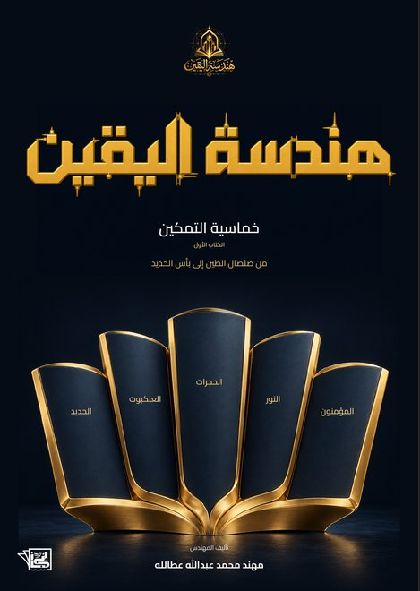

في القرآن جوابٌ لوجعك…لكنك لم تسأله بعد
اختر السؤال الذي يشبهك… واقرأ ما قاله القرآن عنه.
اضغط على سؤالك↓
سورة العنكبوتلماذا يشتدّ البلاء على من يحاول أن يقترب من الله؟+
﴿أَحَسِبَ ٱلنَّاسُ أَن يُتۡرَكُوٓاْ أَن يَقُولُوٓاْ ءَامَنَّا وَهُمۡ لَا يُفۡتَنُونَ﴾
[العنكبوت: ٢]و«الفتنة» في أصل اللغة: إدخال الذهب النار، ليظهر جوهره وتسقط شوائبه. فالنار لا تُهلك الذهب… بل تُظهره.
ماذا لو كان ضيقك اليوم… دليلاً أنك لم تُترَك؟
إن كان الله يعلم الصادق من الكاذب قبل أن يختبره… فلماذا يختبره؟
سورة الحجراتتصلّي وتصوم… فهل أنت مؤمن؟ أم مسلم فقط؟+
﴿قُل لَّمۡ تُؤۡمِنُواْ وَلَٰكِن قُولُوٓاْ أَسۡلَمۡنَا وَلَمَّا يَدۡخُلِ ٱلۡإِيمَٰنُ فِي قُلُوبِكُمۡ﴾
[الحجرات: من الآية ١٤]لم يقل «ولم يدخل»… بل «ولمّا يدخل». و«لمّا» نفيٌ يحمل انتظاراً: لم يدخل بعد… لكنه في الطريق، والباب مفتوح.
فالسؤال ليس: هل أنت مسلم؟ بل: ماذا يبقى منك حين يكلّفك الثبات ثمناً؟
يصلّي ويصوم… ثم يشعر في داخله أنه تفضّل على الله بعبادته. بماذا ردّ القرآن عليه؟
سورة النورلماذا قال الله «تلقّونه بألسنتكم»… والتلقّي يكون بالأذن؟+
﴿إِذۡ تَلَقَّوۡنَهُۥ بِأَلۡسِنَتِكُمۡ وَتَقُولُونَ بِأَفۡوَاهِكُم مَّا لَيۡسَ لَكُم بِهِۦ عِلۡمٞ وَتَحۡسَبُونَهُۥ هَيِّنٗا وَهُوَ عِندَ ٱللَّهِ عَظِيمٞ﴾
[النور: ١٥]نزلت قبل ١٤٠٠ سنة… وتصف بدقة مذهلة زرّاً نضغطه كل يوم: «إعادة التوجيه».
آخر رسالة أعدت توجيهها… هل مرّت على عقلك؟ أم على لسانك فقط؟
إشاعةٌ أحرقت قلب النبي ﷺ… فكيف قال الله عنها: ﴿بَلۡ هُوَ خَيۡرٞ لَّكُمۡ﴾؟
سورة المؤمنونعملتَ خيراً… ثم خفت: هل قُبل مني؟+
﴿وَٱلَّذِينَ يُؤۡتُونَ مَآ ءَاتَواْ وَّقُلُوبُهُمۡ وَجِلَةٌ أَنَّهُمۡ إِلَىٰ رَبِّهِمۡ رَٰجِعُونَ﴾
[المؤمنون: ٦٠]ليس خوفاً يشلّك، بل خوف المحبّ الحريص: كمن يحمل كأس ماء ثمين فوق بساط أبيض.
المسارعة يفعلها كثيرون… والسبق يصله القليل. فما الذي يجعلك سابقاً لا مسارعاً فقط؟
سورة الحديدلماذا أنزل الله الحديد مع الكتاب والميزان… في آية واحدة؟+
﴿وَأَنزَلۡنَا مَعَهُمُ ٱلۡكِتَٰبَ وَٱلۡمِيزَانَ لِيَقُومَ ٱلنَّاسُ بِٱلۡقِسۡطِۖ وَأَنزَلۡنَا ٱلۡحَدِيدَ فِيهِ بَأۡسٞ شَدِيدٞ وَمَنَٰفِعُ لِلنَّاسِ﴾
[الحديد: من الآية ٢٥]كتابٌ بلا حديد = حقٌّ ضعيف. حديدٌ بلا كتاب = قوةٌ بلا ضمير. وفي يدك اليوم أقوى «حديد» عرفه الإنسان: جوالك.
ختم الله الآية بقوله ﴿وَلِيَعۡلَمَ ٱللَّهُ مَن يَنصُرُهُۥ وَرُسُلَهُۥ بِٱلۡغَيۡبِ﴾… فما الاختبار الذي تكشفه كلمة «بالغيب»؟

هذه ٥ أسئلة… وفي الكتاب ٤٣ محطة
🤍 لا تستطيع ثمنه الآن؟
اختر باباً كاملاً… هديةً لك.